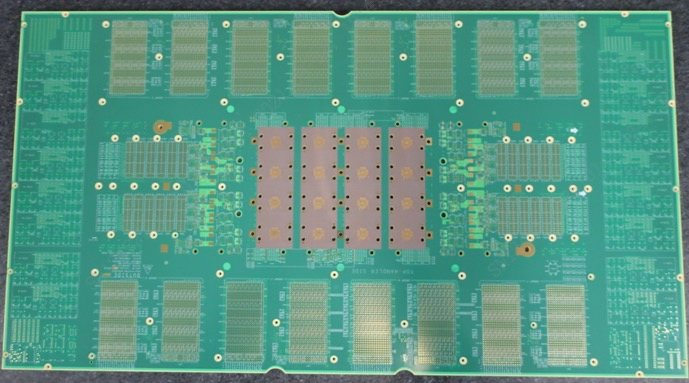
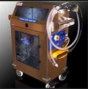

测试硬件
测试与可靠性硬件。
负载板・老化板・EM 插座 DUT・定制设备。
测试
测试・可靠性硬件
测试板・DUT


- 用于 HTOL／HAST 可靠性测试的老化板（存储・逻辑）
- 负载板・探针卡
- 按客户图纸和规格制作 EM 插座 DUT（技术合作伙伴）
定制设备

- 研磨头测漏仪适用于 AMAT 与 EBARA 研磨头的正压・负压泄漏检测
- 浆料・药液供给系统（SDS／CDS）机台端（Local）与中央集中式供液系统，均可定制
- 小型定制设备粒子计数器推车・PPE 洁净推车・晶圆传送装置
服务范围、交期及保修条件按项目逐一确认，并在报价中列明。维修品及翻新品并非 OEM 原厂认证产品。如需使用非原厂替换零部件，将在报价时明确说明，并在取得贵司批准后方可使用。文中所列厂商名称及型号仅用于标明对象设备，并不代表与相关厂商存在合作或授权关系，亦并非 OEM 原厂服务。文中所列公司名称及产品名称均为各公司的商标或注册商标。